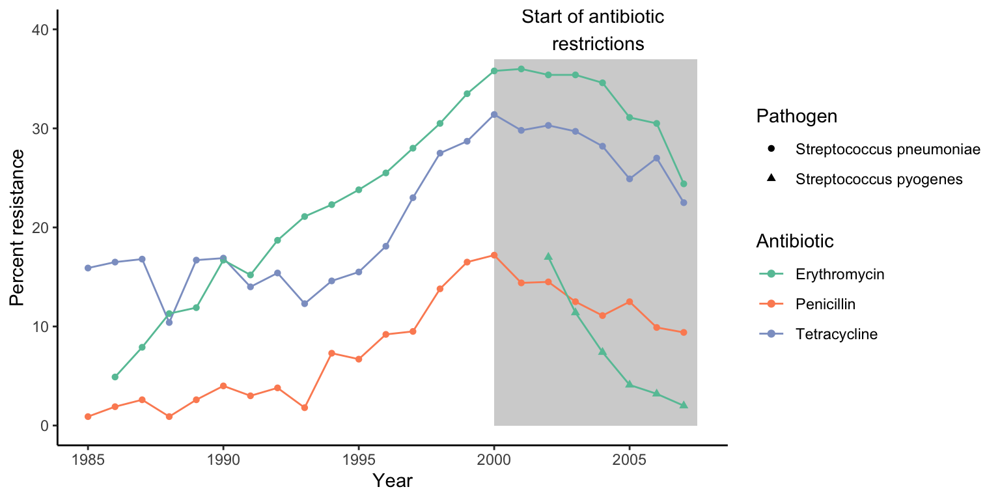

24 Evolutionary Medicine II: Evolving Pathogens
by Dr. Michael Tobler
DRAFT 20250113
25 Evolutionary Medicine II: Evolving Pathogens
In the previous chapter, we focused on understanding non-communicable diseases from an evolutionary perspective. We will now focus on infectious diseases caused by evolving pathogens. In Chapter 7, we already explored the evolutionary relationship between pathogens and their hosts. We learned how hosts evolve strategies to exclude or combat pathogens, while pathogens are selected to evade the hosts’ defense mechanisms—giving rise to a continuous coevolutionary arms race. Pathogens, of course, have the upper hand in this evolutionary game, since their large population sizes and short generation times allow them to evolve much more rapidly than their hosts—especially in long-lived species like humans. But from a personal and public health perspective, we can’t just stand idly by as pathogens exert selection on our population, watching the cost of selection (e.g., the death toll caused by disease) rise and hoping that the next generation will be better adapted to recurring waves of infection. We cannot evolve our way out of a contagious disease problem. However, as a society, we collectively have the power to impact a pathogen’s fitness and steer its evolution towards more desirable health outcomes for us. In this chapter, we will explore how evolutionary principles relate to epidemiology, and how cultural practices can critically shape the dynamics of disease spread and the evolution of pathogen properties—including antibiotic resistance in harmful bacteria.
25.1 Epidemiology and Pathogen Fitness
A pathogen’s fitness is directly related to its ability to spread in a population of hosts. Epidemiologists have developed sophisticated models to better understand how diseases spread, how many people will be infected, or how long a disease outbreak might last. Let’s take a look at one such epidemiological model (the SEIR model) to familiarize ourselves with the general logic epidemiologists apply, and then relate this logic to explicitly define pathogen fitness.
25.1.1 A Basic Epidemiological model
There are a number of theoretical models epidemiologists apply to study disease dynamics. Many of them are compartmental models, where individuals in a populations are assigned to different compartments (categorical groups), and we quantify the rates at which individuals transition from one compartment to another. For example, in the SEIR model, a population is subdivided into four compartments (Figure @ref(fig:seir)): (1) susceptible hosts (S) that are available for a pathogen; (2) infected hosts (E) that have contracted a pathogen but cannot yet spread it (i.e., they are within an incubation period); (3) infectious hosts (I) that show disease symptoms and can pass on the pathogen to susceptible individuals in the population; and (4) recovered hosts (R) that have cleared the infection and are now immune to the pathogen.
The pool of total hosts in the population (N=S+E+I+R) depends on the rate at which new individuals are born (birth rate, ùùª) and the rate at which individuals die (death rate, ùù≥; Figure @ref(fig:seir)). If we assume a constant population size, the birth and death rates cancel each other out; hence, we will ignore them in our considerations. From the perspective of disease dynamics, it is more important at what rates individuals transition from one epidemiological compartment to another:
The rate at which susceptible individuals become infected depends on the density of susceptible individuals, the density of infectious individuals, and the rate of disease transmission (ùù±). The transmission rate is a property of the pathogen (some pathogens are more easily transmitted than others), as well as the host‚Äôs behavior and cultural practices.
Once infected, the rate at which individuals become infectious depends on the incubation rate (ùùπ), which is largely a property of the pathogen. Some pathogens replicate rapidly within a newly infected host (e.g., noroviruses can cause diarrhea within 12-24 hours post-infection), while others lie dormant for extended periods of time before becoming active (e.g., infections with Plasmodium vivax, Listeria monocytogenes, and Molluscum contagiosum can take months to unfold).
Once infectious, individuals have two possible fates. They may be able to clear the infection and recover at a rate of ùùº. Recovered individuals are unavailable to the pathogen due to acquired immunity, unless they lose that immunity (at the rate of ùù∫). Alternatively, infectious individuals may die as a direct consequence of the pathogen‚Äôs activity within the body. The infectious mortality rate is the pathogen‚Äôs virulence (ùù∞), which is a measure of host damage stemming from interactions between hosts and pathogens.
From a pathogen’s perspective, epidemiology is all about balancing the rates at which new hosts can be infected and the rates at which hosts become unavailable, either due to death or immunity. Pathogens are, of course, keen to tip the balance in favor of transmission, which allows their spread in a population.
25.1.2 R0: A Measure of Pathogen Fitness
The basic reproductive number (R0) is the expected number of secondary cases generated by a single infectious individual entering a population composed of entirely susceptible individuals. Hence, R0 estimates the epidemic growth at the start of an outbreak. Imagine a traveler coming back from an exotic destination where they contracted a new kind of infectious disease; if R0=2, that traveler—patient zero—is expected to infect two other people after their return, and if R0=6, six other people would be infected. As you can see in Table 13.1, basic reproductive numbers vary vastly among different pathogens that cause health issues in human populations. R0 can also vary within a pathogen depending on the epidemiological context.
| Disease | R0 |
|---|---|
| Hepatitis C | 2 |
| Ebola | 2 |
| Zika | 2 |
| Spanish flu | 4 |
| HIV | 4 |
| SARS (2002 outbreak) | 4 |
| Smallpox | 6 |
| Rubella | 6 |
| Mumps | 10 |
| Chickenpox | 11 |
| Measles | 18 |
The basic reproductive number is a measure of a pathogen’s fitness. Just as natural selection acts to maximize the fitness of individuals, it also acts to maximize the basic reproductive number of pathogens. If R0>1, a pathogen can spread in a population of hosts, and it can spread faster with increasing values of R0. If R0<1, then the rate of spread is not fast enough to remain in the population, and the disease will disappear. If R0=1, then the frequency of the pathogen remains stable through time.
Importantly, we can link analyses of pathogen evolution to epidemiological analyses, because the basic reproductive number can be approximated using epidemiological parameters that describe the transition rates of individuals across different epidemiological classes (S to E to I to R). Assuming that birth and pathogen-independent mortality rates are the same, incubation periods are short, and loss of immunity is rare, then the basic reproductive number can be defined as:
\[\begin{align} R_0=\frac{βS}{⍺+ν} (\#eq:47) \end{align}\]
In this case, ùù± is the transmission rate, S is the density of susceptible individuals in the population, ùù∞ is the pathogen‚Äôs virulence, and ùùº is the rate of recovery. To put the formula into words: pathogen fitness is positively influenced by high transmission rates and high densities of susceptible individuals, and it is negatively influenced by high rates of recovery (which converts susceptible individuals to immune individuals) and by high rates of pathogen-induced mortality.
We can examine the basic reproductive numbers that have been reported for different pathogens during past outbreaks. Measles stands out because it has a very high R0. This high value is driven primarily by measles‚Äô high transmission rate (ùù±). The measles virus (Measles morbillivirus) is transmitted when infectious individuals cough or sneeze, contaminating the air and surfaces with virus particles. The virus stays alive outside the host body for several hours, and anyone breathing in contaminated air or touching contaminated surfaces has a 90 % change of becoming infected. In addition, infectious individuals can spread this virus up to four days before any symptoms arise; so by the time patients realize that they are sick, they have likely already spread to virus to other hosts. This extremely efficient transmission corresponds to a high value of R0.
In contrast, Ebola—though it seems like a scarier disease based on news coverage—has a much smaller basic reproductive number. The Ebola virus (Zaire ebolavirus) can only be spread by direct contact with blood or other bodily fluids of an infectious individual, which translates to much lower transmission rates. In addition, the high rate at which Ebola causes the death of infectious individuals further decreases the probability of its spread, because it narrows the window during which the pathogen can jump to the next host. Hence, Ebola disease spread is often self-limiting, which explains why outbreaks tend to be spatially restricted.
25.2 The Evolution of Virulence
One of the key factors in pathogen evolution is virulence. Unlike transmissibility, which is often subject to a variety of constraints, virulence can evolve rapidly, with concomitant consequences for disease dynamics. A common misconception is that pathogens will eventually evolve toward low virulence, resulting in a commensal relationship between host and pathogen. When first proposed, the rationale behind this idea appeared to be supported by both theoretical considerations and empirical observations.
Early theoreticians suggested that high virulence decreases pathogen fitness (R0), and a minimally impacted host is ideal for carrying the pathogen around and facilitating its spread. This notion was supported by the observation that novel hosts often have a higher susceptibility to a pathogen when compared to hosts that experienced a coevolutionary history with the same pathogen. This difference suggested that coevolution between host and pathogen ultimately reduces virulence. For example, smallpox and other diseases common in European populations caused high rates of mortality in Native American peoples that did not have previous contact to these pathogens. This difference in disease susceptibility was ruthlessly exploited by British colonialists and—allegedly—by the U.S. Army, who distributed smallpox-infested blankets as a form of biological warfare to eradicate Native peoples. However, there are also prominent counterexamples, such as diseases like malaria and tuberculosis, which have long-documented histories of coevolution with humans yet still exhibit high virulence.
Today, we know that coevolution does not necessarily lead to pathogens with a low virulence, and, in some cases, high virulence is adaptive for the pathogen. There are three, non-mutually exclusive hypotheses that explain the maintenance of intermediate or high virulence: the trade-off hypothesis, the short-sighted evolution hypothesis, and the coincidental evolution hypothesis.
25.2.1 Trade-Offs and Modes of Transmission
Virulence, the damage a pathogen causes hosts, is a byproduct of pathogen replication. Pathogens produce antigens and metabolic byproducts while using the host’s tissues, nutrients, and energetic resources, which collectively impair host function and fitness. The more rapidly pathogens replicate within a host, the higher the cost imposed on the host. A trade-off arises, because a pathogen’s fitness improves with increasing reproductive capacity (more infectious particles are produced to infect new hosts), but pathogen fitness is also impaired by the correlated virulence, which reduces the host’s ability to facilitate transmission. Consequently, the optimal virulence is somewhere at an intermediate level; high enough to support sufficient pathogen replication but low enough to limit damage to the host, such that transmission to new hosts can still occur. The exact balance in this trade-off is partly shaped by how pathogens are transmitted from one host to another.
To explore how modes of transmission can impact the trade-off between virulence and transmission, let’s contrast two basic modes of transmission. Horizontal transmission occurs when pathogens are transmitted among individuals of the same generation, while vertical transmission occurs from mothers to offspring. If transmission is exclusively vertical, then the fitness of the pathogen becomes inextricably linked to the fitness of the host; any virulence that damages the host will also damage pathogen. Therefore, the costs associated with elevated virulence should decrease with increasing opportunities for horizontal transmission.
Sharon Messenger and her coauthors (1999) tested this prediction using Escherichia coli bacteria as host cells and a bacteriophage (i.e., a virus that infects bacteria) as a pathogen. In this system, they were able to tightly control the mode of transmission (vertical vs. horizontal), and the researchers alternated periods of vertical transmission (for either one or eight days) with short bouts of horizontal transmission. They predicted that shorter periods of vertical transmission should select for higher rates of pathogen replication, and accordingly, higher virulence. The results of this evolution experiment not only revealed the expected correlation between virulence and pathogen reproduction, but also the expected virulence difference between treatments that differed in the amount of horizontal transmission (Figure @ref(fig:veritcaltrans)A). When vertical transmission was limited, it was advantageous for phages to replicate quickly—both because increased production of virus particles facilitated horizontal transmission and because costs associated with damage to the host were relatively small (the fate of the host was decoupled from the fate of the pathogen after just one day). In contrast, phages were able to maximize their fitness by minimizing damage to the host when there were long periods of vertical transfer, because phage fitness was contingent on host fitness during that period.
Natural systems also illustrate the importance of vertical transmission in shaping virulence evolution. Fig wasps are tiny hymenopterans that pollinate figs and are parasitized by nematodes. Fig wasps deposit their eggs inside of figs, where most of the wasps’ life cycle takes place: larvae develop, pupate, emerge as adults, and mate inside the fig, and females then disperse out to lay their eggs on a new fruit. Different species of fig wasps vary in their mating systems. In some species, only a single female deposits eggs on a fig, such that the resulting matings in the next generation are primarily between brothers and sisters. In other species, multiple females lay eggs on the same fig. The different behaviors have direct consequences for the transmission of the fig wasps’ nematode parasites. In wasp species where only one female lays her eggs on a particular fig, there are no opportunities for horizontal transmission, and nematodes are exclusively transmitted vertically. Since the nematodes’ fitness is thus linked to the wasps’ fitness, we would predict that the parasites have evolved a relatively low virulence. In contrast, nematodes should evolve higher virulence in wasp species where multiple females lay eggs on the same fig, facilitating horizontal parasite transmission. Indeed, there was a negative correlation between the proportion of single foundress broods and the virulence of nematode parasites across different species of fig wasps (Figure @ref(fig:veritcaltrans)B). Overall, these two examples illustrate how natural selection can drive the evolution of low virulence when there are high costs associated with damaging the hosts, irrespective of the benefits to increased reproductive rates. The next question is: under what circumstances are costs associated with damaging the host less severe, such that higher virulence can evolve?
The cost of virulence can be reduced—and even mostly avoided—if a pathogen is not reliant on the host for transmission. Consider the common cold, which is caused by a variety of rhinoviruses, coronaviruses, adenoviruses, and enteroviruses. All of these viruses have to be transmitted directly from one host to another, because they have a limited survivability outside of the host. Hence, a host that is too sick to move around and be in contact with susceptible individuals may clear an infection before significant opportunities for transmission arise. Hence, lower virulence facilitates transmission. However, there are two ways that a pathogen can circumnavigate costs associated with high virulence: a high pathogen survivability outside the host body and pathogen transmission through mobile vectors.
If a pathogen has a high survivability outside of the host’s body, it can linger in the environment and wait for a susceptible individual to pass by—even after the initial host has long perished. For example, anthrax bacteria (Bacillus anthracis) form resting spores that can survive in the soil for decades. Hence, a premature host death does not necessarily come at a substantial fitness cost for the pathogen, especially if high pathogen replication leads to the release of large numbers of propagules. Following the same logic, the virulence of intestinal bacteria that can cause disease is directly correlated with the proportion of outbreaks that are waterborne (i.e., transmitted through contaminated water; Figure @ref(fig:waterb)A). When sanitation is poor and contamination of drinking water common, host mobility becomes secondary to pathogen spread, and transmission is instead facilitated by high rates of pathogen replication with corresponding consequences for virulence.
Costs associated with virulence can also be mitigated through vector-borne transmission, where an intermediate host carries and transmits a pathogen to a susceptible individual. Blood-feeding arthropods are particularly common disease vectors; they transmit many diseases relevant for human health. For example, mosquitoes are intermediate hosts for malaria, dengue, and zika, sand flies transmit leishmaniasis, hemipterans carry Chagas disease, and ticks spread Lyme disease, among many others. A comparison of virulence between diseases with different modes of transmission indicated that the vast majority of directly-transmitted pathogens have a very low virulence (<0.1 % mortality per infection), while elevated and high virulence is much more common among vector-borne pathogens. Interestingly, the virulence of vector-borne pathogens inside the mobile vector that is responsible for disease transmission is often negligible, because the mobility of the intermediate host is critical for pathogen fitness.
In summary, trade-offs between pathogen reproduction and transmission explain the evolution of intermediate levels of virulence. Low virulence can evolve when decreases in host mobility and fitness also reduce pathogen transmission. However, if pathogens do not need “help” from their hosts to infect susceptible individuals, either because they can survive outside of the host or they can be transmitted by a vector, then there is little cost associated with killing the host, and high virulence may not be selected against.
25.2.2 Short-Sighted and Coincidental Evolution Hypotheses
Two additional hypotheses have been put forward to explain the evolution of high virulence in absence of trade-offs between pathogen replication and transmission.
The short-sighted evolution hypothesis emphasizes the fact that evolution and adaptation within the host might favor elevated virulence. For example, competition arising from co-infection of multiple pathogens can favor strains with more rapid replication, which has concomitant negative effects for the host. Rapid pathogen replication is favored, because the pathogen that uses host resources the fastest and successfully transmits to susceptible individuals will be able to persist in a population even when the host dies sooner than optimal for maximal transmission. In contrast, the slower-replicating pathogen may not be able to persist in that situation, because hosts may die (as a consequence of the faster-replicating pathogen) before the pathogen is transmitted. So, if there is within-host competition between pathogens, the cost of having a virulence that is too high tends to be smaller than the cost of having slower rates of replication. Evidence for a relationship between competitive ability and virulence comes from experiments with malaria (Plasmodium chabaudi). Especially during the acute phase of malaria, when the pathogen replicates quickly, strains with higher virulence have a competitive advantage over strains with lower virulence (Figure @ref(fig:malaria)). Other examples of short-sighted evolution have been inferred when pathogen strains escape competition by colonizing and adapting to novel tissues or organs within the host. For example, polio viruses typically infect the digestive tract, where they cause little harm to the host. Viral mutations that facilitate colonization of cells associated with the nervous system increase within-host fitness of the virus, even though infection of the nervous system does not lead to transmission to susceptible individuals. In this case, host fitness costs associated with viral replication in a novel cell type is just a byproduct of viral mutations that mediate increased within-host fitness, even if that adaptation is an evolutionary dead end for the pathogen.

Finally, the coincidental evolution hypothesis posits that high virulence can evolve as an incidental byproduct of pathogen adaptation to other ecological niches. This hypothesis has been favored to explain virulence in facultative pathogens. For example, some soil microbes—like Clostridium tetani that causes tetanus—can be highly virulent if they happen to infect humans. Some researchers have suggested that the toxins produced by these bacteria have primarily evolved to deter grazing by protozoan predators in the soil. In humans, these anti-grazing defense toxins inadvertently interfere with normal physiological function and cause health issues, including death.
25.3 Cultural Practices, Disease Spread, and Evolution
Understanding pathogen fitness and the principles governing the evolution of virulence from an epidemiological perspective offers key insights into how we can manage the spread and evolution of pathogens. In fact, evolutionary considerations inform public health guidelines that have profound impacts on disease dynamics‚Äîboth when they are followed (disease outbreaks contract and low-virulence strains are favored) and when they are not (diseases spread and high-virulence strains can emerge). Thinking about pathogen fitness explicitly in the context of R0, we can manipulate two parameters in the equation through cultural practices: the rate of transmission (ùù±) and the density of susceptible individuals (S). If we take the reigns of a disease outbreak by tightly controlling rates of transmission or the density of susceptible individuals, then the pathogen has only one evolutionary strategy left to increase R0; it has to decrease its virulence (ùù∞).
25.3.1 Disrupting Pathogen Transmission
In many cases, the most cost-effective approach to reduce R0 is to minimize the rate of pathogen transmission. Prevention measures that reduce disease spread are, of course, largely dependent on the mode of transmission of the pathogen of concern. Most common pathogens we deal with on a regular basis—viruses that cause colds, the flu, and now COVID-19—are directly transmitted respiratory infections. Simple behavioral changes like increased personal hygiene, mask wearing, social distancing, and reduced travel, especially for people that are symptomatic, can dramatically reduce the spread of disease.
Evidence for how effective these measures are was uncovered during the COVID-19 pandemic, when preventative measures that reduced transmission were much more rigorously enforced, including extended periods of lockdowns in some countries. While these measures primarily targeted the spread of SARS-CoV-2, the effectiveness of preventative measures is hard to gauge when looking at that virus, simply because comparative data from previous outbreaks is not available. However, the same preventative measures also affected the spread of other directly transmitted respiratory infections, including rhinoviruses that cause the common cold and influenza-A that causes the seasonal flu. In the wake of COVID-19-related lockdowns in 2020, infections of rhinoviruses were dramatically lower compared to the same time period in 2019 (Figure @ref(fig:rhinovirus)A). Infections drastically declined after the implementation of mandatory lockdowns, and they rose back to normal levels right after lockdowns ended later in the year. The same pattern holds true for influenza A. While there was an initial surge in late 2019, coinciding with the emergence of COVID-19, the frequency of positive flu tests plummeted to record lows by mid-2020 (Figure @ref(fig:rhinovirus)B). More importantly, the seasonal spike in flu cases that invariably occurs over the winter months completely disappeared in the winter of 2020/2021, with continued record-low test positivity rates. Consequently, the COVID-19-induced experiment drastically impacted transmission rates for all directly-transmitted respiratory diseases, clearly showing how impactful cultural practices are when it comes to disease spread.
Cultural practices that prevent disease spread differ for pathogens with other rates of transmission. For example, the use of condoms and other safer sex practices are critical to curb the spread of HIV and other sexually transmitted diseases. Proper sanitary and waste water management practices, as well as the provisioning of clean drinking water, helps to limit infections from waterborne pathogens. And the distribution of insect repellents, mosquito nets, and mosquito-proof housing can drastically reduce the prevalence of vector-borne diseases, like malaria. Although the general approaches to limit disease transmission differ from pathogen to pathogen, and individual action has direct benefits (i.e., you reduce your risk of contracting a disease by social distancing, wearing a mask, using a condom, or sleeping under a mosquito net), the larger-scale public health benefits hinge on the collective action of many people in a population. A significant negative impact on pathogen fitness can only be expected when a substantial segment of the population adheres to practices that limit transmission. However, if they do, R0 can be pushed below 1, and the pathogen disappears from the population. In many cases, measures that reduce pathogen transmission have proven to be sweeping successes. For example, our ability to provide clean drinking water even when natural disasters disable sanitation and waste water management has lead to stark reductions in outbreaks of waterborne diseases.
25.3.2 Vaccination and Herd Immunity
The fitness of a pathogen can also be reduced by reducing the density of susceptible hosts in a population. In theory, we could just safeguard the recovery of infected individuals; as more people get immune after overcoming an infection, the R0 of the pathogen gradually gets smaller. However, letting a disease run its natural course not only comes with huge public health and economic costs, but rapidly spreading pathogens have a large mutational input into the population, potentially leading to the emergence of novel strains that can overcome the acquired immunity of recovered hosts.
Vaccines are a much more effective way of managing the density of susceptible individuals in a population. Compared to uncontrolled disease spread, vaccination is much less costly both from a public health and an economic perspective. For example, the risk for severe neurologic or allergic side effects associated with the MMR vaccine—one of the most common vaccines that protects against measles, mumps, and rubella—is 5.3 per 100,000 fully vaccinated people. Among 1.8 million people that received the vaccine, only one death was putatively—not conclusively—linked to MMR vaccination. In comparison, prior to the 1960s when the MMR vaccine was first introduced, there were 3-4 million measles cases in the US every year, including 48,000 hospitalizations, 1,000 cases of associated encephalitis, and 500 deaths. Over 186,000 children annually were diagnosed with mumps, with many suffering from permanent deafness as a consequence. And an estimated 12.5 million people contracted rubella, causing 11,000 pregnant women to lose their babies, 2,100 newborn deaths, and 20,000 babies born with congenital rubella syndrome, which can cause life-long health issues. Rigorous MMR vaccination campaigns have caused a massive decline in the prevalence of measles, mumps, and rubella, to the point where measles was declared eliminated from U.S. in 2000, after the absence of disease transmission for over 12 months. Similarly, vaccination has lead to the global extinction of smallpox—a vicious disease with death rates around 30 %—in 1980.
The reason why diseases with high vaccination coverage disappear is because the reduction in the density of susceptible individuals pushes the pathogen’s R0 below 1; rather than spreading in a population, a pathogen outbreak now contracts. Importantly, not all individuals in a populations have to be vaccinated to curb disease spread and cause pathogen extinction—only enough people so that R0 is smaller than 1. Using Equation (ref?)(eq:47), the proportion of the population that needs to be vaccinated to push R0 below 1 is given by the herd immunity threshold (HIT):
\[\begin{align} HIT=1-\frac{1}{R_0}=1-\frac{⍺+ν}{β} (\#eq:47) \end{align}\]
Since HIT is directly dependent on R0, diseases with a higher R0 require higher rates of vaccination (Figure @ref(fig:hit)). However, once HIT is reached and the pathogen’s R0 is smaller than 1, the phenomenon of “herd immunity” emerges. Since a pathogen can no longer spread in a population that has reached HIT, even individuals that are not vaccinated by the pathogen experience a significant reduction in the likelihood of infection. This is important from a public health perspective because comprehensive vaccination of eligible individuals helps to protect vulnerable segments of the population that do not have the privilege of immunization, including young children and immunocompromised people.

Overall, the development and administration of vaccines has been a sweeping success with far-reaching public health benefits. For example, despite various setbacks in the rollout of the COVID-19 vaccination campaign in 2021, the effects of vaccination on disease prevalence became evident within just a few months. By August, states with vaccination rates above 50 % exhibited below average hospitalization rates (Figure @ref(fig:vax)A). In contrast, every state with an above-average hospitalization rate also exhibited low levels of vaccination coverage. Hence, collective buy-in and action of a majority are crucial to impact disease dynamics in a significant way and produce the desired public health outcomes. The importance of coordinated responses is illustrated by the recent resurgence of measles in the U.S. Even though this disease was considered eliminated in 2000, measles has made a significant comeback over the past decade. Significant outbreaks have been recorded in the Pacific northwest, California, New York, New Jersey, and Michigan, with over 1,200 cases reported in 2019. These outbreaks have, in part, been facilitated by drops in vaccination rates (Figure @ref(fig:vax)B) inspired by anti-vaccination myths that are rooted in superstition and propagated by dubious entities with ulterior motives.
25.3.3 Pathogen Responses
One of the most important consequences of successful disease management—whether through the reduction of transmission or the reduction of susceptible individuals in the population—is that we exert selection on a pathogen to evolve a lower virulence. When variables in the numerator of the R0 equation are controlled through cultural practices, a parameter that a population of pathogens still has control over is the virulence, which is in the denominator. So, only decreases in virulence will cause an increase in R0, and if extrinsic factors reduce R0 below 1, pathogen strains exhibiting mutations conferring a lower virulence should have a higher fitness than those with higher virulence.
Paul Ewald was among the first to popularize the idea that successfully managing pathogen fitness could lead to the evolution of pathogens with reduced virulence. For example, he provided some circumstantial evidence in the 1990s that HIV was evolving a lower virulence in response to the spread of safer sex practices. Later analyses of a well-studied HIV outbreak in rural Uganda indeed provided evidence that the trade-off between virulence and transmission explains the gradual attenuation of HIV through time (Figure @ref(fig:hivevol)).
In summary, being an active participant in public health measures that target disease transmission and aim to increase the number of resistant individuals in a population has three important benefits: (1) protection and minimized disease risk for yourself; (2) herd immunity that provides protection for community members that may not be able to protect themselves; and (3) elimination of pathogens from populations, or—when that is not attainable—selection for pathogen strains with reduced virulence. Approaching disease dynamics and public health issues from evolutionary perspectives has direct applications that are complementary to curative care, which focuses on healing people once they have contracted a disease. Or, as Bill Hamilton highlighted the importance of evolution in public health:
“It opens our eyes to many quite weird possibilities about disease that most medical scientists, tending to be unaware of current evolutionary thought, don’t think of.” —Bill Hamilton
25.4 Antibiotic Resistance
Besides emerging diseases, the evolution of antibiotic-resistant bacteria is another major public health issue faced by our society. Antibiotics are antimicrobial substances—many of which are naturally produced by fungi and other organisms—that kill or inhibit the growth of bacteria but not eukaryotic cells. These properties make them applicable for the prophylaxis and treatment of bacterial infections. The mechanisms by which antibiotics work vary widely, but they generally interfere with essential biochemical and physiological pathways that mediate the function of microbial cells. Some antibiotics target the cell wall or the cell membrane; other disrupt the synthesis of microbial DNA or RNA, proteins, or specific metabolites. The discovery and application of antibiotics—starting with Fleming’s discovery of penicillin—transformed medicine and has allowed for the efficient treatment of bacterial diseases that, previously, were often lethal.
The molecular precision with which antibiotics interfere with microbial function is simultaneously one of their biggest weaknesses. Unlike sterilization treatments that apply heat, alcohol, or other cleaning supplies to kill bacterial cells outright, bacteria can evolve adaptations that render antibiotics ineffective or even nonfunctional, thus becoming resistant to their effects. Adaptations that mediate antibiotic resistance include enzymes that metabolize and inactivate antibiotics, modification of targets that make them inert to the effects of antibiotics, modifications of the cell wall that prevent the influx of antibiotics into the cell, and transmembrane transport proteins that can pump antibiotics out of the cell.
Due to their biochemical effects, antibiotics are a source of selection that impact pathogen evolution. The presence of antibiotics increases the fitness of certain genetic variants (those that have resistance alleles), while it decreases the fitness of others (those that lack the resistance alleles). Hence, antibiotics are a source of selection that causes the spread of antibiotic resistant strains in a population.
The broad application of antibiotics in human and veterinary medicine, as well as in livestock production, has lead to a rapid spread of resistant strains across the globe. For example, the prevalence of methicillin-resistant Staphylococcus aureus (MRSA), which is responsible for a variety of difficult-to-treat infections in humans, has increased exponentially since the early 1990s (Figure @ref(fig:abres)A). There are an estimated 500,000 hospitalizations annually for MRSA infections in the U.S. alone. Of these, about 80,000 cases include severe invasive infections, leading to 11,000 deaths. Considering the death toll, and that the cost of a MRSA-associated hospitalization is over $90,000 per patient, the public health and economic impacts of antibiotic-resistant bacterial pathogens are profound. More importantly, we have also observed the evolution of multi-resistant strains that can evade the effects of multiple antibiotics. Even in rural regions of developing countries, over 92 % of isolated bacterial strains are resistant against certain antibiotics, and 5 % of strains are resistant to combination treatments of seven different antibiotics at once (Figure @ref(fig:abres)B). Simultaneous resistance to multiple types of antibiotics significantly curtails treatment options, and as a consequence, infections that were easy to treat are becoming lethal problems once again. This problem is exacerbated by the fact that the evolution of antibiotic resistance far outpaces the rate at which we are discovering and developing new antibiotics for clinical use. In fact, the last new class of antibiotics we use in medicine today was discovered in 1987—more than 30 years (almost 900,000 bacterial generations) ago.

The rapid spread of antibiotic-resistant bacteria is primarily a consequence of the broad application of antibiotics. For many decades, antibiotics have been mis- and overused in human medicine and beyond. Such misuses include the inappropriate prescription of antibiotics for viral diseases (flu and cold), failure to take antibiotics for the prescribed course of a treatment, and the excessive intake of antibiotics as a prophylactic. The widespread use of antibiotics causes susceptible strains to disappear, while strains with a mutation conferring resistance benefited from a fitness advantage and became more prevalent. A key question, from an evolutionary perspective, is how we can exert selection on antibiotic strains to favor the maintenance of susceptible strains in a population, so that we can effectively treat infections when they occur.
Key to the solution of this problem is that antibiotic resistance does not come without costs. In absence of antibiotics, resistant strains typically have a lower fitness than susceptible strains. This is likely caused by metabolic inefficiencies and physiological costs associated with resistance mechanisms that reduce microbial growth. Costs associated with antibiotic resistance become evident when we compare the growth rate of resistant bacteria to the growth rates of sensitive strains that are otherwise genetically identical. A recent meta analysis for different types of antibiotics revealed that most resistant strains exhibit a lower fitness than their sensitive counterparts, although the magnitude of difference varies substantially (Figure @ref(fig:anri)A). In addition, there is a correlation between the degree of resistance (measured as the minimum inhibitory concentration, MIC) and the fitness costs of resistance in absence of an antibiotic (Figure @ref(fig:anri)B); i.e., the higher the antibiotic concentration a bacterial strain can tolerate, the lower the fitness of that strain is when competing with sensitive strains in an antibiotic-free environment.
Given the cost of antibiotic resistance, a primary defense against the spread of resistant strains is to create an environment where susceptible strains have a competitive advantage. Not surprisingly, “The ICU Book”—the primary guide for critical care medicine—states that “the first rule of antibiotics is to try not to use them, and the second rule is try not to use too many of them”. Recognition of the growing problem with antibiotics in the 1990s led some countries to implement restrictions on antibiotic use and launch aggressive campaigns to educate both medical professionals and the the general public about how we curb the spread of resistant strains. In Belgium, for example, these efforts led to a decrease in antibiotic prescription by 36 % from 1998 to 2007. As a consequence, the prevalence of antibiotic resistant Streptococcus pneumoniae started to decrease substantially starting in the year 2000 (Figure @ref(fig:sucs)). Similarly, erythrimycin-resistant S. pyogenes decreased in prevalence from 17 % to 2 % within just six years (Figure @ref(fig:sucs)). These findings highlight that the spread of resistant strains is reversible, and how proper management of antibiotics can help to prevent issues with resistant strains. Getting the antibiotic-resistance problem under control now is critical, especially because the costs of tolerance—upon which successful management strategies hinge—can decline over time through adaptive evolution (see R exercise).

25.5 Reflection Questions
In the seminal paper “The dawn of Darwinian Medicine”, George Williams and Randolph Nesse (1991) stated: “Conventional wisdom has it that prolonged host-parasite association leads to a gradual reduction in virulence, with obligate mutualism as the final stage of extended association”. What assumptions underlie this conventional wisdom? Why may those assumptions not hold up to scrutiny?
Pathogens require a minimum host population size to persist. If a host population is too small, the rate at which infected hosts die or become immune to a pathogen is too high, leading the to the extinction of the pathogen. How would you predict a pathogen to evolve if it were to survive in a small host population?
Our discussion of disease dynamics has assumed that the outcome of the interaction between a host and a pathogen is solely dependent on traits that a controlled by either the host or the pathogen. What other factors—biotic or abiotic—might influence pathogen spread and evolution in natural populations? How might the spread of diseases and the evolution of virulence change when other factors are also at play?
From an evolutionary perspective, what is the difference between an antibiotic and disinfectants that you can find in cleaning and medical supplies? Why do we not see the evolution of disinfectant-resistant microbes?
How can the use of antibiotics in animal production pose a risk to humans?
What could we do if we wanted antibiotic resistance to evolve as fast as possible?
25.6 References
Bell AS, de Roode JC, Sim D, Read AF (2006) Within-host competition in genetically diverse malaria infections: parasite virulence and competitive success. Evolution 60: 1358–1371.
Blanquart F, Grabowski MK, Herbeck J, Nalugoda F, Serwadda D, Eller MA, Robb ML, Gray R, Kigozi G, Laeyendecker O, Lythgoe KA, Nakigozi G, Quinn TC, Reynolds SJ, Wawer MJ, Fraser C (2016) A transmission-virulence evolutionary trade-off explains attenuation of HIV-1 in Uganda. eLife 5: e20492.
Ewald PW (1983) Host-parasite relations, vectors, and the evolution of disease severity. Annual Review of Ecology and Systematics 14: 465–485.
Ewald PW (1991) Waterborne transmission and the evolution of virulence among gastrointestinal bacteria. Epidemiology & Infection 106: 83–119.
Goossens H, Coenen S, Costers M, De Corte S, De Sutter A, Gordts B, Struelens M (2008) Achievements of the Belgian antibiotic policy coordination committee (BAPCOC). Euro Surveillence 13: 1-4.
Herre EA (1993) Population structure and the evolution of virulence in nematode parasites of fig wasps. Science 259: 1442–1445.
Jones N (2020) How COVID-19 is changing the cold and flu season. Nature 588: 388–390.
Melnyk AH, Wong A, Kassen R (2015) The fitness costs of antibiotic resistance mutations. Evolutionary Applications 8: 273–283.
Messenger SL, Molineux IJ, Bull JJ (1999) Virulence evolution in a virus obeys a trade-off. Proceedings of the Royal Society B 266: 397–404.
Peek K (2021) Flu has disappeared for more than a year. Scientific American, Apr 29, 2021.
Singh AK, Das S, Singh S, Gajamer VR, Pradhan N, Lepcha YD, Tiwari HK (2018) Prevalence of antibiotic resistance in commensal Escherichia coli among the children in rural hill communities of Northeast India. PLoS One 13: e0199179.
Williams GC, Nesse RM (1991) The dawn of Darwinian medicine. Quarterly Review of Biology 66:1–22.